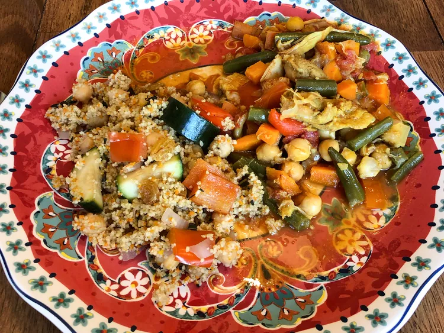

Couscous

Description
This Moroccan couscous with lots of tender vegetables, chickpeas, and raisins is flavored with warm spices, orange zest, and fresh mint for a traditional North African dish.
Ingredients
- 1 ¼ teaspoons ground cumin
- ½ teaspoon ground ginger
- 1 ½ cups couscous
- 1 ½ cups chicken broth
- 1 teaspoon kosher salt
Steps
- Place a large, heavy bottomed pot over medium heat. Stir in cumin, ginger, cloves, cayenne, cardamom, coriander, and allspice; gently toast until fragrant, about 2 to 3 minutes. Stir in oil and onion, cook until softened. Stir in bell pepper and zucchini; cook for 5 minutes. Stir in raisins, salt, zest, and chickpeas.
- Pour in chicken broth and orange juice; turn heat to high and bring to a boil. When the mixture is boiling, stir in couscous and remove from heat; cover, and let stand 5 minutes. Fluff with a fork, and fold in chopped mint.